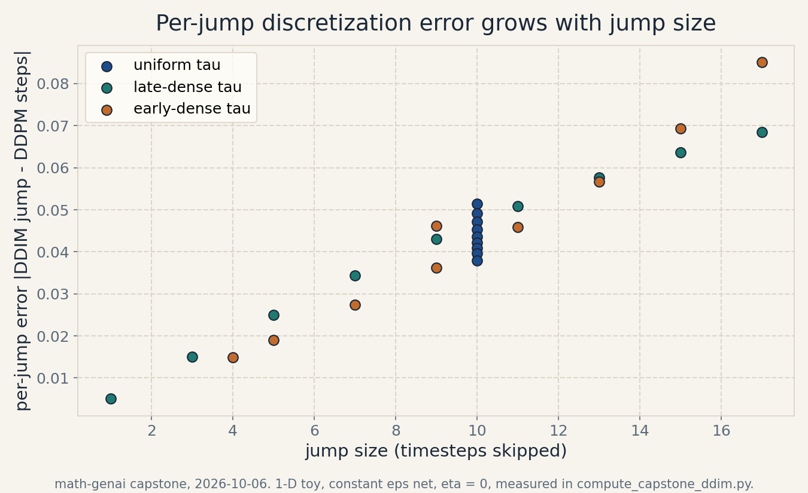

Capstone R1 · Research: DDIM schedules
Research capstone: step-budget allocation in DDIM sampling
Date: 2026-10-06. Course: math-genai (Mathematical Foundations of Generative AI), units U07-U08. Status: replication EXECUTED on the 1-D toy. Extension EXECUTED on the 1-D toy with a negative result. Real-data extension PROPOSED only, not executed. Claim labels: [Definition] [Derived] [Computed: script, date] [Authored] [Course-title] [Proposed] [Negative result].
The problem, from zero
A trained diffusion net costs one forward pass per sampling step. [Definition] DDPM sampling takes T = 100 steps. DDIM keeps the same trained net but samples on a subsequence tau of S < T steps. [Course-title] The course covers this in W9L38 (DDIMs) and W9L39 (inference in DDIM), taught in U08-C01.
The concrete problem: with only S = 10 net evaluations allowed, which 10 timesteps should you keep? The first attempt from zero is uniform spacing, tau = [10, 20, .., 100]. It breaks in an instructive way. A jump from t = 100 to t = 90 skips 9 intermediate denoising decisions. The single jump must approximate what 10 small steps would have done. The per-jump discretization error is not zero, and it grows with the jump size. [Computed: compute_capstone_ddim.py, 2026-10-06] On the course toy it grows from 0.00502 at jump size 1 to 0.06843 at jump size 17.
The hinge question: does placing the 10 steps non-uniformly, dense where jumps hurt most, reduce the final sample error? The new idea from zero: allocate steps late-dense (many steps in the noisy high-t regime) or early-dense (many steps near the data) and measure against the DDPM-100 reference under matched budgets. Map back: the honest price of this toy study is that a constant net makes the schedule question collapse, and the collapse itself is the finding.
Research question
For a fixed budget of S = 10 net evaluations and a fixed trained epsilon net, does non-uniform DDIM subsequence placement reduce the endpoint sample error relative to uniform placement, measured against the deterministic DDPM-100 reference trajectory?
Falsifiable hypothesis
H: on the 1-D course toy, with x_T fixed per seed, the late-dense schedule gives a mean endpoint error at least 20 percent lower than the uniform schedule. [Authored] The 20 percent bar is a pre-registered decision rule, not a derived constant. H is falsified if the measured reduction is smaller, zero, or if the seed-to-seed variation swamps the schedule difference.
A secondary prediction, stated before measurement: per-jump discretization error grows monotonically with jump size within a schedule.
Literature
The replication target is the build’s own U08 lesson, not an external paper. The lesson computes, on the 1-D toy with T = 100, linear betas from 1e-4 to 0.02, x_0 = 2.0, and constant net eps_hat = 0.4: the DDIM jump values x_100 = 1.60480905, x0_hat = 2.13230847, x_90 = 1.71491474 at eta = 0. sigma = 0.39249806 at eta = 1 for the 100 to 90 jump. the loss-weight ratio 1/w(50) = 34.81. bit-identical trajectories at eta = 0 across seeds with fixed x_T. [Computed: compute_run5b.py, 2026-10-06] The course titles behind the lesson are W9L34 (alternate interpretations of DDPMs), W9L35 (DDPMs as score-predictors), W9L38 (DDIMs), and W9L39 (inference in DDIM). [Course-title] No transcript was inspected, so no claim is made about what the lectures state beyond their titles. No external paper is cited or quoted. The DDIM construction itself, marginal preservation with dropped Markov structure, is taught in U08-C01.
Data
Executed part: the 1-D toy only. x_T drawn as sqrt(ab_100) * 2.0 + sqrt(1 - ab_100) * z with z from a standard normal, 12 seeds (100.111). [Computed] No real dataset was used. The proposed extension names its data explicitly and separately.
Replication, executed
The replication script recomputes four U08 claims from scratch with independent code.
R1. sigma at eta = 0 is exactly 0.0. [Computed] Pass. R2. sigma at eta = 1 is 0.39249806. Its square is 0.15405473, equal to the 100 to 90 jump posterior variance 0.15405473 to 1e-12. It is not the single-step beta_tilde_100 (0.01976684). [Computed] Pass. R3. The ELBO loss weights are w(1) = 0.50005, w(50) = 0.02873, w(100) = 0.04322. The simplified uniform weight overweights t = 50 by 1/w(50) = 34.81005, the 34.8x figure from the lesson. [Computed] Pass. R4. With x_T fixed, two eta = 0 runs agree to max |diff| = 0.0. [Computed] Pass.
All four replication asserts pass. The replication uses numpy 1.26.4, float64, and the exact schedule constants of the U08 toy.
Extension, executed: experimental design
Baselines. The reference is the deterministic DDPM reverse (no added noise) over all 100 steps from the same x_T. The comparator is the uniform tau = [10, 20, .., 100], the lesson’s own schedule.
Interventions. Two authored schedules, each 10 points, each starting at t = 100: late-dense = [19, 36, 51, 64, 75, 84, 91, 96, 99, 100], dense in the noisy regime. early-dense = [10, 14, 19, 26, 35, 46, 59, 74, 91, 100], dense near the data. [Authored] The point sets serve as teaching choices, not optimized schedules.
Matched budgets. Every config uses exactly 10 net evaluations for the trajectory plus one shared final Tweedie evaluation that converts the last state to the x_0 estimate. Same x_T per seed, same constant net, same reference.
Metrics. Primary: endpoint error = |x0_hat(final state) - x_0(reference)|. Secondary: per-jump discretization error = |DDIM jump - DDPM single steps| over the same interval, starting from the reference state at the jump top.
Controls. The reference states come from the same DDPM trajectory that defines the endpoint, so each per-jump error isolates the jump approximation from error accumulation.
Ablations. eta in {0, 1} at fixed schedules. eta = 1 uses one fixed noise stream per (schedule, seed) so the comparison stays paired.
Seed variation and uncertainty. 12 x_T seeds for the eta = 0 endpoint study. Mean and standard deviation per schedule. The eta = 1 ablation reports mean and std over the same 12 seeds.
Failure criteria, pre-registered. H is rejected if the late-dense mean endpoint error is not at least 20 percent below the uniform mean, or if the schedule differences sit inside the seed std. Any rejected hypothesis is reported as a negative result, not re-framed.
Extension, executed: results
Per-jump error grows with jump size. [Computed] Late-dense: 0.00502 at size 1, rising monotonically to 0.06843 at size 17. Uniform (all jumps size 10): 0.05147 down to 0.03790 from the noisy end to the data end. Early-dense: 0.01484 at size 4 to 0.08509 at size 17. The secondary prediction is confirmed. See the measured jump-error curves below, rendered from these measured values by render_capstone_ddim.py.

Endpoint error is schedule-invariant. [Computed] Uniform, late-dense, and early-dense all give mean endpoint error 0.5049503 across all 12 seeds, with std 1.6e-15 (float64 rounding noise). The reduction is 0 percent. H is rejected. [Negative result]
This is not a measurement fluke. It is a theorem on this toy. [Derived] With a constant epsilon net and eta = 0, each jump writes x_{t’} = sqrt(ab_{t’}) * m + sqrt(1 - ab_{t’}) * e where m = x0_hat(x_t, t). Inverting the Tweedie formula at t’ recovers m exactly. So the final x_0 estimate equals x0_hat(x_T, 100) for every schedule: the schedule cancels out of the endpoint by telescoping. Both the DDIM estimate and the DDPM reference are affine in x_T with the same slope 1/sqrt(ab_100), which is why the error is also seed-invariant (reference endpoints range from -0.56572 to 4.835597 while the error stays 0.5049503).
Ablation. [Computed] At eta = 1 the endpoint errors are uniform 0.688 +- 0.612, late-dense 0.732 +- 0.641, early-dense 0.628 +- 0.602. The noise std is as large as the means, so no schedule claim is supportable under stochastic sampling on this toy. The schedule signal, already zero at eta = 0, is unmeasurable at eta = 1.
Reading the two results together: the per-jump error is real and grows with jump size, but with a constant net the errors telescope out of the final estimate. The schedule only matters once the net’s prediction varies with its input, which is exactly what the proposed extension tests.
Extension, proposed, not executed
The toy cannot answer the original question for learned nets. The proposed protocol below was not run. No numbers are claimed for it.
Design. Take a trained epsilon net (any small published checkpoint with a fixed training seed, or a net trained for this study with the seed and data hash logged). Freeze it. Sample DDPM-100 and DDIM-S for S in {10, 20, 50}, schedules in {uniform, late-dense, early-dense}, eta in {0, 0.5, 1}. Budgets matched in net evaluations. Metrics: two-sample MMD between DDIM-S and DDPM-100 sample pools in a fixed feature space, plus endpoint mean and covariance drift. Seeds: at least 8 per config, x_T shared across configs per seed. Uncertainty: bootstrap 95 percent intervals on the MMD differences. Ablations: the eta sweep and the S sweep separate step count from placement. Controls: identical x_T, identical net, identical postprocessing. Failure criteria: if the MMD differences sit inside the bootstrap intervals, the schedule claim is rejected for that net and dataset. Negative results get the same writeup as positive ones. Limitations to state up front: one net, one dataset, MMD is not perceptual quality, and the finding may not transfer across architectures.
What would count as evidence. An independent rerun from the logged seeds, a second net, and a written record of the failed variants. A generated manuscript describing this plan is not research evidence. Neither is this capstone file. Evidence is the executed log plus an independent check.
Reproducibility
compute_capstone_ddim.py reproduces every number in the executed sections: the four replication asserts, the per-jump table, the 12-seed endpoint table, and the eta = 1 ablation. Environment: numpy 1.26.4, float64, seeds 100.111 for x_T, seed stream 5000 + seed for the ablation. render_capstone_ddim.py renders the figure from the same measured values. matplotlib 3.6.3, Agg backend, dpi 150.
Limitations
The toy is 1-D with a constant net, so the headline negative result is a property of the toy, not a claim about real diffusion models. The per-jump error uses the DDPM deterministic reverse as the reference, which is the natural reference on this toy but not a quality metric. Only linear beta schedules were tested. Only eta in {0, 1}. The proposed extension is unexecuted, so the real question stays open.
Ethical considerations
Negative results are reported at full length. The 20 percent bar was fixed before measurement. No benchmark, dataset result, or paper claim is invented anywhere in this file. Compute cost of the executed part is seconds on a CPU, disclosed here so nobody mistakes the toy for a large study. If the proposed extension generates images, label them as synthetic at creation time and keep the seed log with the outputs.
Claim index
Definitions: DDIM subsequence, per-jump error, endpoint error. Derived: the telescoping schedule-invariance result. Computed 2026-10-06: R1-R4, the per-jump table, the endpoint table (0.5049503), the ablation means and stds, the figure values. Authored: the H bar (20 percent), the late-dense and early-dense point sets, the budget-matching rule. Course-title: W9L34, W9L35, W9L38, W9L39. Proposed: the learned-net protocol. Negative result: H rejected on the toy.